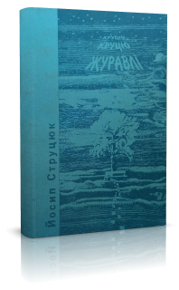
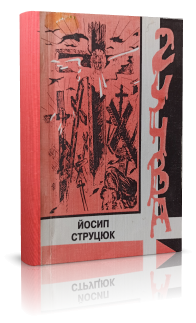
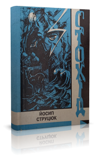
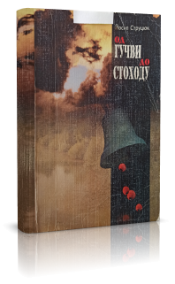
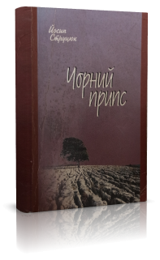
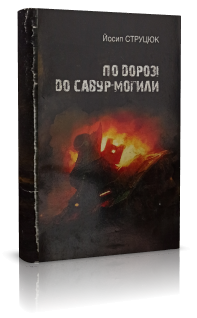
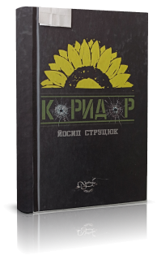

Романи
Романи Йосипа Струцюка охоплюють широкий історичний діапазон — від давньої історії Волині до сучасної російсько-української війни.

«Круцю, круцю, журавлі…»1996Перший роман автора; багатоплановий твір про давні й сьогочасні звичаї, пам'ять землі і народу.
«Гучва»2001Повість печальних літ.
«Стохід»2004Повість жорстоких літ.
«Од Гучви до Стоходу»2007Дилогія романів. Луцьк, «Волинська книга».
«Чорний припс»2009
«По дорозі до Савур-могили»2015Роман про російсько-українську війну (наклад 50 прим.). «Отаман Болбочан та інші»2017Про воєначальника Петра Болбочана; за оцінкою академіка М. Жулинського — «видатне явище історичної романістики».
«Отаман Болбочан та інші»2017Про воєначальника Петра Болбочана; за оцінкою академіка М. Жулинського — «видатне явище історичної романістики».- «Інфамія»Художньо-документальний роман про переддень Євромайдану і Революції гідності.

«Коридор»2019Роман «Коридор смерті» та повість «363-й», а також оповідання, новели, статті. Премія ім. Петра Сороки (2020).